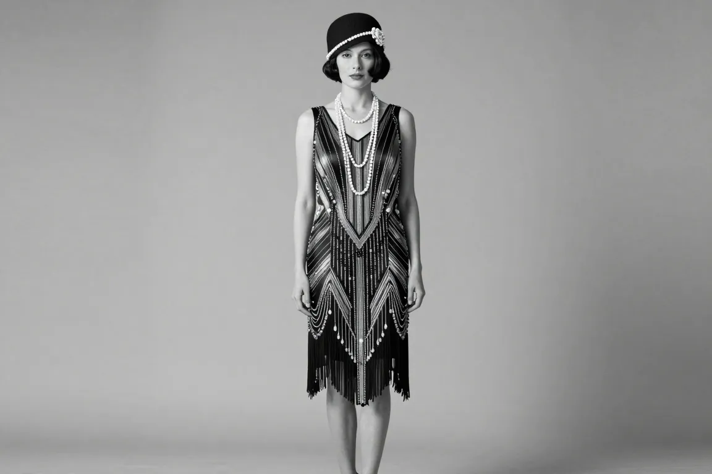

Garçonne and flapper dress
fashion · 1920s · also: Flapper dress, Chemise dress, 1920s drop-waist dress, La Garçonne
The short, straight dress of the 1920s: a loose chemise with a low waist and a knee hem, in jersey or beaded chiffon.

Core thesis
After the war, a woman's dress drops the corset and the waist, and a straight, short, easy line lets her work and dance.
Design principles
- Cut the dress as a straight tube with the waist seam at the hip, about 20 cm below the natural waist.
- Set the hem at the knee, between 25 and 40 cm above the floor.
- Skip the corset; use a flat bandeau so that the chest looks level.
- Use jersey or crêpe de Chine for day, and silk chiffon or georgette for the evening.
- Cover an evening dress in glass beads in rows, so that it weighs 3 kg or more and swings with each step.
- Keep the neckline round or V-shaped and the arm bare for evening.
- Wear a cloche hat, long beads and a low-heeled shoe with a strap.
Anti-patterns
- A small waist and a corseted bust
- A wide cage or bustle skirt
- A long train for day
- Stiff, heavy brocade
- A high collar with a ruffle
- A dress with a tight, shaped hip
Palette
Lineage
- Echoes
- Art Deco, Art Deco product
- Evolved into
- Art Deco evening accessory, Bias-cut glamour
- Hybridises with
- Art Deco dance shoe, Art Deco Jewellery, Costume Jewellery
- Rebelled against
- Crinoline and bustle dress
Use it
SKILL.md · tokens.css · source JSON · open in the demo